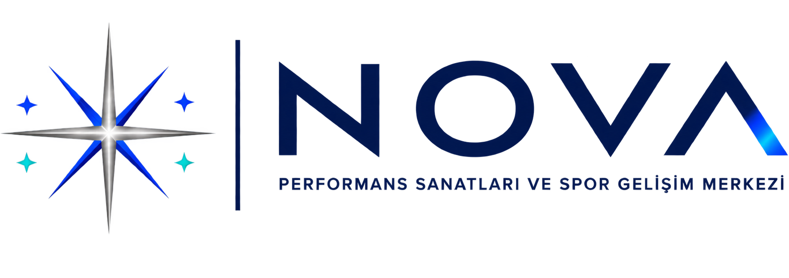

Potansiyel
Fiziksel kapasite, koordinasyon ve gelişim potansiyeli birlikte değerlendirilir.

Yetenek Değerlendirme ↗NOVA SANAT VE SPOR KULÜBÜ
Çocukların sanat ve spor alanındaki özel yeteneklerini erken yaşta keşfeden; gelişimlerini yıllar boyunca takip eden seçici gelişim sistemi.
NOVA NEDİR?
NOVA; çocukların yeteneklerini kısa dönemli eğitimlerle değil, erken yaşta keşfederek lise mezuniyetine kadar takip eden sanat ve spor gelişim modelidir.
Yetenek keşfi, eğitim, performans gelişimi, akademik yönlendirme ve uluslararası kariyer planlamasını tek bir yapı altında birleştirir.
Hedefimiz daha fazla öğrenciye ulaşmak değil; doğru öğrenciyi doğru alanda geliştirmektir.NOVA YETENEK SEÇİM SİSTEMİ
NOVA öğrencileri doğrudan kayıtla kabul edilmez. Adaylar, çok aşamalı yetenek değerlendirme sürecine alınır.
Fiziksel kapasite, koordinasyon ve gelişim potansiyeli birlikte değerlendirilir.
Ritim, öğrenme hızı, yaratıcılık ve oyun zekâsı gözlemlenir.
Takım çalışması, disiplin, iletişim ve sürdürülebilirlik değerlendirilir.
Kontenjan içinde gelişim potansiyeli en güçlü adaylar kabul edilir.
KURUCU NESİL
2027 değerlendirmelerinde kabul edilen öğrenciler, NOVA'nın ilk uzun dönem gelişim grubunu oluşturacak. Kontenjan bir kayıt kapasitesi değil, uzun dönemli gelişim kapasitesidir.
NOVA GELİŞİM YOLCULUĞU
Yetenek ve potansiyelin belirlenmesi.
Doğru sanat veya spor alanı.
Yaşa ve seviyeye göre program.
Düzenli ve ölçülebilir takip.
Sahne, yarışma ve turnuvalar.
Akademi ve üniversite hazırlığı.
NOVA SANAT AKADEMİSİ
Halk dansları, geleneksel ve modern danslar, uluslararası danslar, sahne performansı, müzik ve prodüksiyon.
NOVA SPOR AKADEMİSİ
Voleybol, basketbol, futbol ve futsal branşlarında uzun dönemli sporcu gelişimi.
NOVA METHOD · STUDENT PASSPORT
Öğrencinin yaşı, gelişim seviyesi, performans verileri ve potansiyeline göre ortak eğitim standardı.
GÜVEN VE SORUMLULUK
Fiziksel, psikolojik ve sosyal güvenlik başarıdan önce gelir.
Etik, pedagojik yaklaşım ve iletişim temel kriterdir.
Sanat veya spor eğitimin alternatifi değil, parçasıdır.
Aileler gelişim sisteminin bilinçli paydaşıdır.
NOVA GLOBAL
NOVA'nın büyüme modeli hızlı şubeleşmeye değil, kalite standardının korunmasına dayanır.
“Büyürken standardını kaybetmeyen kurum olmak.”ŞEFFAFLIK
NOVA güveni reklamlardan değil, kanıtlanabilir kurumsal standartlardan üretir.
SIK SORULAN SORULAR
Hayır. Öğrenciler belirlenen kontenjanlar kapsamında yetenek değerlendirmesi sonucunda kabul edilir.
Hayır. Başvuru ve değerlendirme kabul garantisi oluşturmaz.
Hayır. NOVA yalnızca öğrencileri en güçlü biçimde hazırlar.
NOVA YETENEK DEĞERLENDİRME SÜRECİ
Öğrenci kabul süreçleri belirlenen yaş grupları ve kontenjanlar için dönemsel olarak açılır.